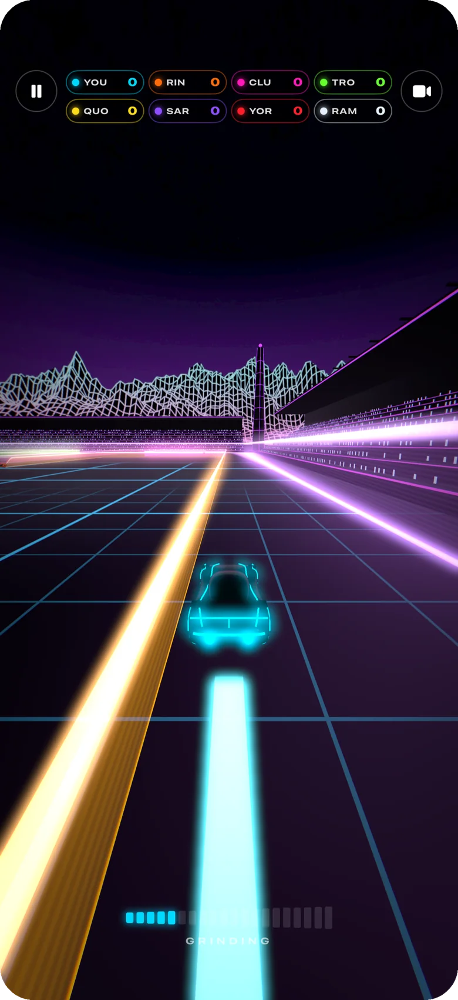
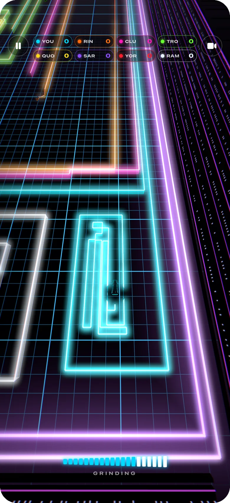
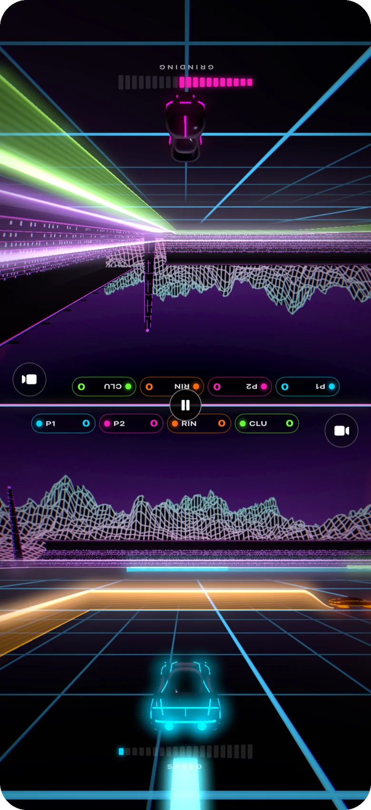
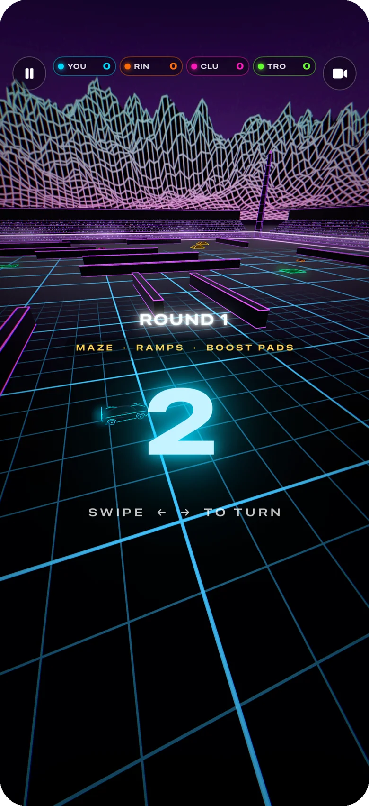
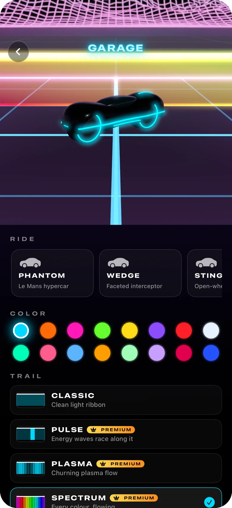
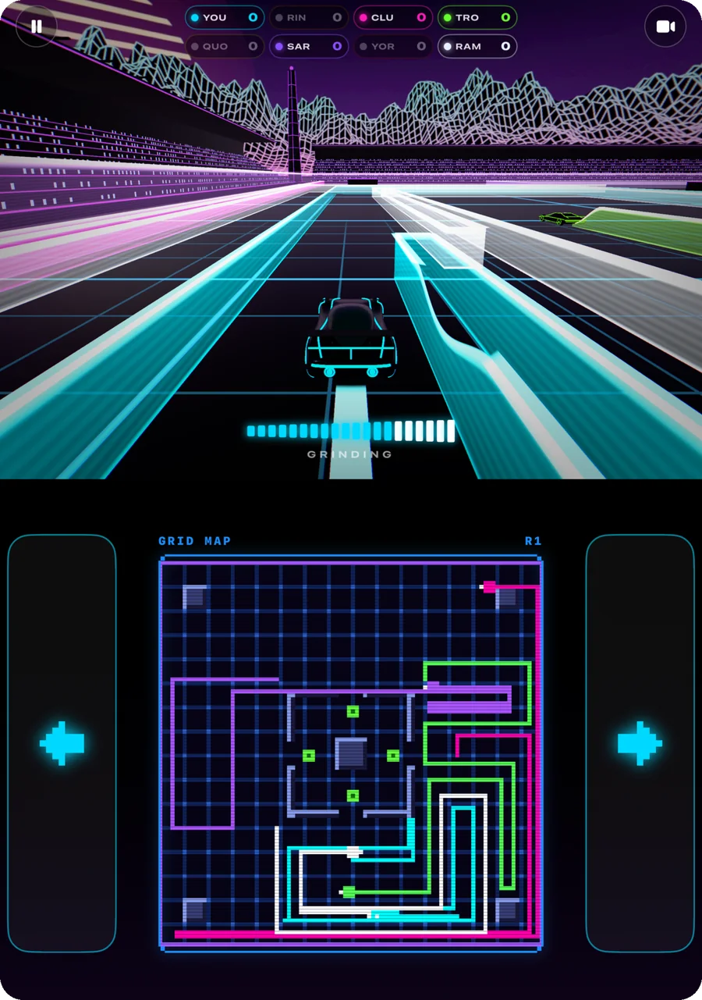
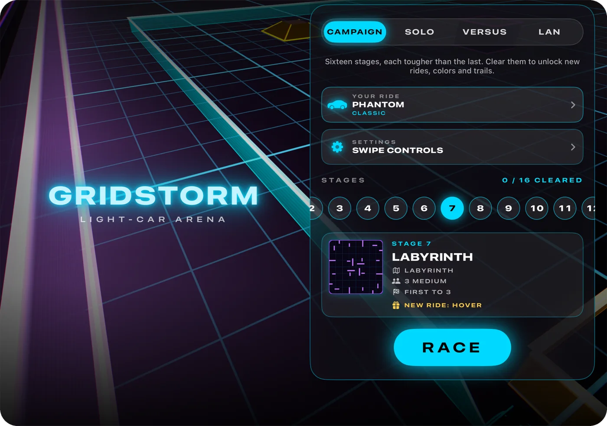

GRIDSTORM / FOR IPHONE AND IPAD
Light-car battles on a neon grid.
Your car never stops, and it leaves a wall of light behind it. Swipe left or right to turn. Hit a wall or the edge of the arena and you're out; the last car riding wins the round. Ride close to the walls to speed up, then cut across a rival's path.
Screenshots





Features
Simple controls
Swipe left or right anywhere, or tap the edges of the screen. Every turn is 90°.
Campaign
16 stages on 8 hand-made arenas. Clearing a stage for the first time unlocks a ride, a trail or new colors.
Bots
Race up to 7 bots on easy, medium or hard.
Versus
Two players on one screen. Hold it between you, or lay it flat and race face to face.
LAN party
Up to 8 players on nearby iPhones and iPads, over Wi-Fi or Bluetooth. No internet needed.
Modifiers
Speed, arena size, shrinking arenas, fading trails, ghost walls, wrap-around edges, boost pads, ramps and more. Pick a preset, or let Surprise Me choose.
Garage
8 rides, 7 trail styles and 16 colors.
Cameras
Chase, low, high and overhead.
Music
Five original synthwave tracks. Turn off any you don't like.
12 app icons
Pick one in Settings.
No ads, no purchases
No in-app purchases, no account, no tracking.
On iPhone Duo
Fold it like a laptop and the race stays on the upright half. The flat half becomes a control deck: turn pads on each side and a live 8-bit map of the whole arena between them.
Open flat, the game uses the full landscape screen.

